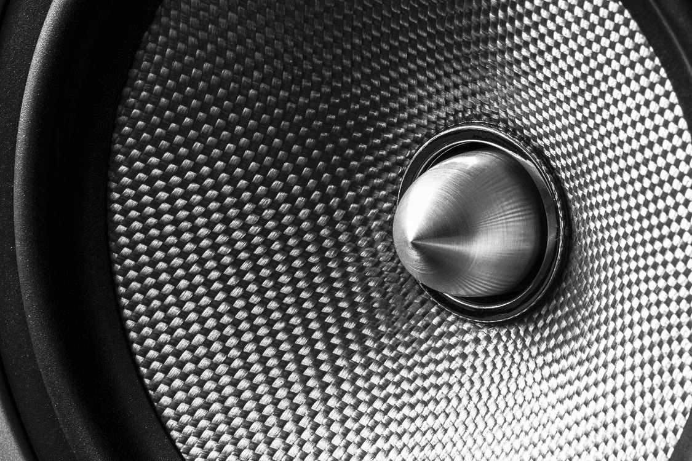

MUSIC FESTIVALS
Spring’s Jazz and Heritage Festival (Jazz Fest) may be the best
known, but hordes of soul, R&B and
hip
hop fans attend
Essence over Fourth of July weekend and Voodoo Music + Arts
Experience brings
indie
rock,
punk and metal to City Park over
Halloween weekend.


Blues is on the menu at the Crescent City
Blues & BBQ Fest, while all things Louis
Armstrong is heralded during August’s.